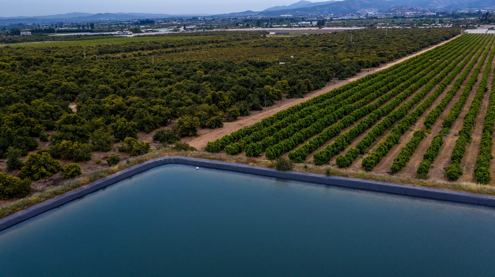
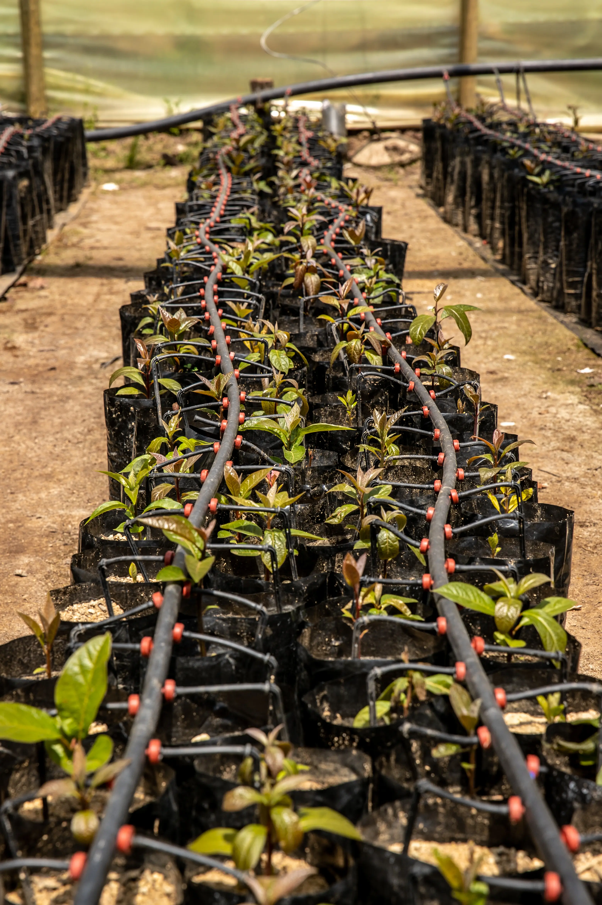
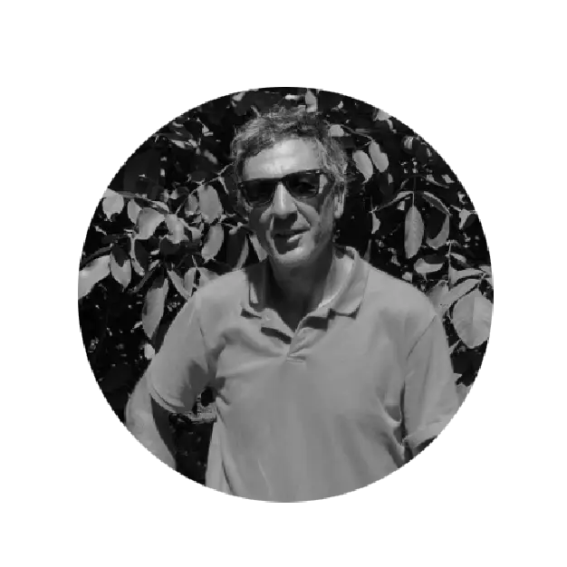
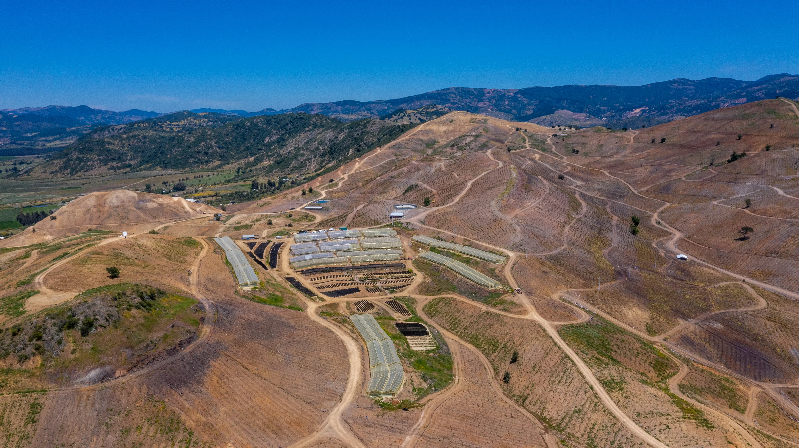

+28M
Kilos de fruta producidos al año
Administramos tu inversión agrícola de principio a fin con servicios integrados, gestión profesional y tecnología para maximizar la rentabilidad de manera sustentable.
Contáctanos arrow_outward
Desde la identificación del campo hasta la operación integral del negocio y la comercialización. Gestionamos cada etapa con visión estratégica, disciplina financiera y ejecución profesional.
Identificación y análisis técnico, productivo y financiero de oportunidades agrícolas para decisiones de inversión informadas.

Planificación e implementación del proyecto agrícola: diseño productivo, infraestructura, estructura operativa y modelo de gestión.

Gestión administrativa, financiera y estratégica del negocio, asegurando orden, trazabilidad y control permanente.

Supervisión estratégica del destino de la producción y seguimiento de resultados comerciales alineados con los objetivos de rentabilidad.

Gestión integral del campo y del negocio agrícola, desde la operación diaria hasta la información estratégica para el inversionista.


Maximizamos los resultados reduciendo costos a través de economías de escala, control riguroso de insumos y una gestión operativa optimizada.

Transformamos información en decisiones. Utilizamos datos reales, sistemas integrados y trazabilidad digital para apoyar la toma de decisiones y agregar valor.

Integramos prácticas responsables que protegen el entorno, reducen riesgos y fortalecen el valor del activo en el tiempo.

Acompañamos a quienes buscan algo más que administrar un campo: buscan control real, información transparente y resultados sostenibles en el tiempo.
Buscan profesionalizar la gestión del campo y asegurar continuidad generacional con orden y estructura.
Invierten en agricultura con foco en gobernanza, control financiero y creación de valor en el tiempo.
Diversifican su capital delegando la operación en un equipo experto con métricas y resultados claros.
Exigen disciplina financiera, transparencia total y trazabilidad permanente del desempeño del activo.

Llevamos más de 35 años trabajando en agricultura. Hemos desarrollado un modelo en el que maximizamos la rentabilidad de los accionistas y creamos valor para los grupos de interés.
.webp)
Gerente General
Ingeniero Comercial y MBA del IE Business School de Madrid. Trabajó por seis años en Grupo ENEL, participando en operaciones financieras y M&A. Fundador de DGS, administradora de grandes inversiones agrícolas chilenas.
Socio
Agrónomo PUC con más de 30 años desarrollando y gestionando inversiones agrícolas en diferentes especies como cítricos, paltas, frutos secos y carozos. Actualmente gestiona más de 220 hectáreas del grupo de alto rendimiento.

Socio
Ingeniero Agrónomo y MBA PUC. Trabajando desde 1991 con el grupo. Actualmente también tiene sus propias inversiones en nueces. Fundó Growex, una empresa exitosa de exportación de frutos secos a nivel global.

Confía en la experiencia, la innovación y la transparencia de DGS para convertir la agricultura en una oportunidad de inversión profesional, rentable y sostenible.
Contáctanos